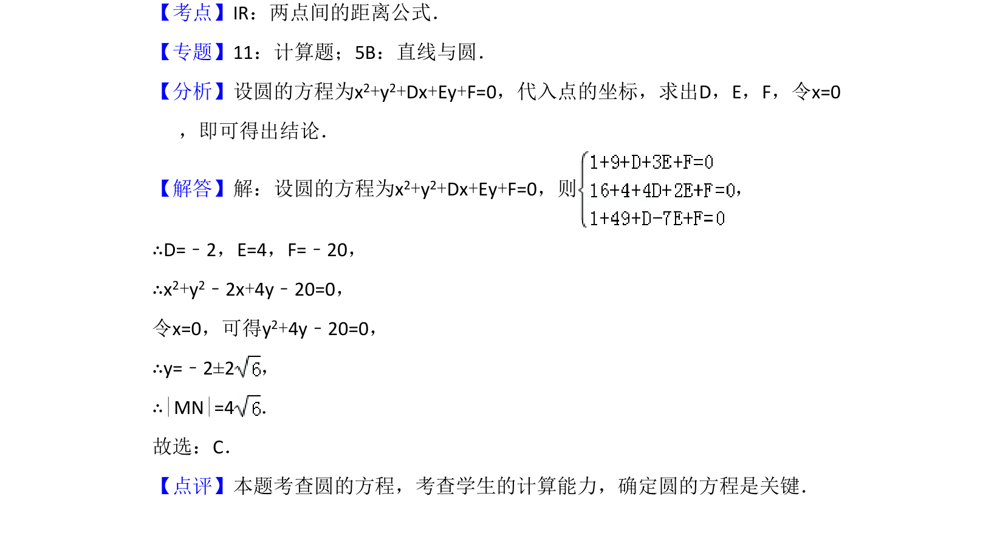

考点：圆一般方程 待定系数法 两点间距离公式
根据三点坐标求圆的方程，并计算该圆与y轴相交所得弦长。

📄 原 PDF 第 5 页：
素材/真题/吉林/2008-2024·（吉林）数学高考真题/2015年高考数学试卷（理）（新课标Ⅱ）（解析卷）.pdf
7．（5分）过三点A（1，3），B（4，2），C（1，﹣7）的圆交y轴于M，N两 点，则|MN|=（ ） A．2 B．8 C．4 D．10
【考点】IR：两点间的距离公式．菁优网版权所有 【专题】11：计算题；5B：直线与圆． 【分析】设圆的方程为x2+y2+Dx+Ey+F=0，代入点的坐标，求出D，E，F，令x=0 ，即可得出结论． 【解答】解：设圆的方程为x2+y2+Dx+Ey+F=0，则 ， ∴D=﹣2，E=4，F=﹣20， ∴x2+y2﹣2x+4y﹣20=0， 令x=0，可得y2+4y﹣20=0， ∴y=﹣2±2， ∴|MN|=4． 故选：C． 【点评】本题考查圆的方程，考查学生的计算能力，确定圆的方程是关键．